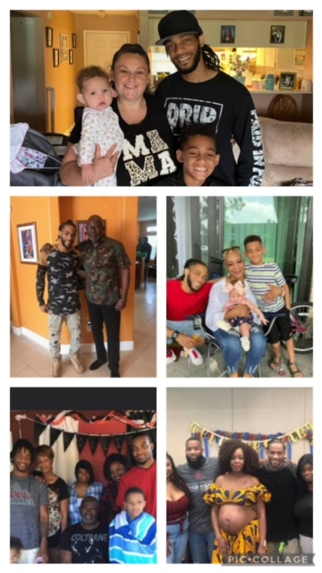
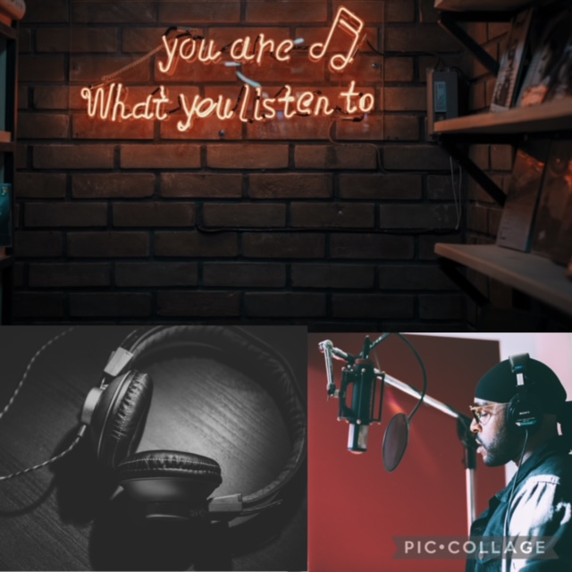
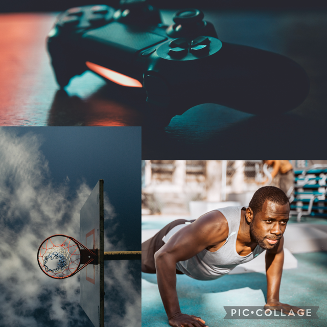

Family
I am the youngest of five siblings, 3 sisters and a twin brother. I have a 9 year old son(Levi) and a 2 year old daughter(Braelynn). Though we dont get to see eachother much, we all text eachother on the regular. My hopes are to make enough money so I can have the finances to make the trips for us to have family outings. I also have two cats (Cookie & Oreo), which we got from a shelter. They are getting more comfortable everyday, as we've only had them for about 3 months.

Music
Music is a very strong passion of mine. There was a time when wanted to be a rapper. I was quite good actually. Life got in the way of those dreams, but thats okay. I enjoy various genres a few artist i have on my playlist consist of: Joyner Lucas, J. Cole, Kane Brown, Brian Culberston, Lecrae, & John Legend

Hobbies/Activities
On my free time, I like to excercise, everyday after work i put time in time doing a quick workout. Also i listen to music and play game. On the weekends ill be seen with my family at a nice diner/restaurant or at the arcade, movies, or pool. Me and my girlfiend also use to play Call Of Duty mobile, until she bought me an Xbox for my last birthday so i can kick her butt on the big screen.

Personal Feats
About 7 years ago i was hit over the head and left for dead. This incident had a major impact of my life. It caused me to lose my job, my place and my dignity. While being homeless, I fell down a path of addiction. But with the help of my loved ones and friends, i have gotten clean for the past 4 years, provided a home for my family, and achieved gaining a CDL license. These accomplishments, I feel, have molded me into the man I am today. I no longer think there is anything that I can't achieve. My relationship with my son is much better and my family is proud of me. I thank God for giving me the strength of a warrior to fight with faith of a better future. So i know i will do good in this program of Software Engineering to provide an even better future for those close to me.